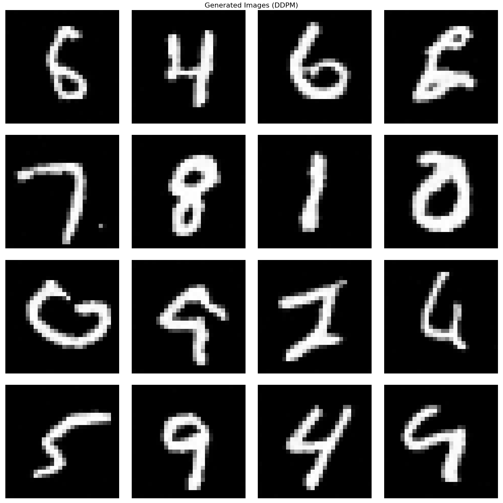
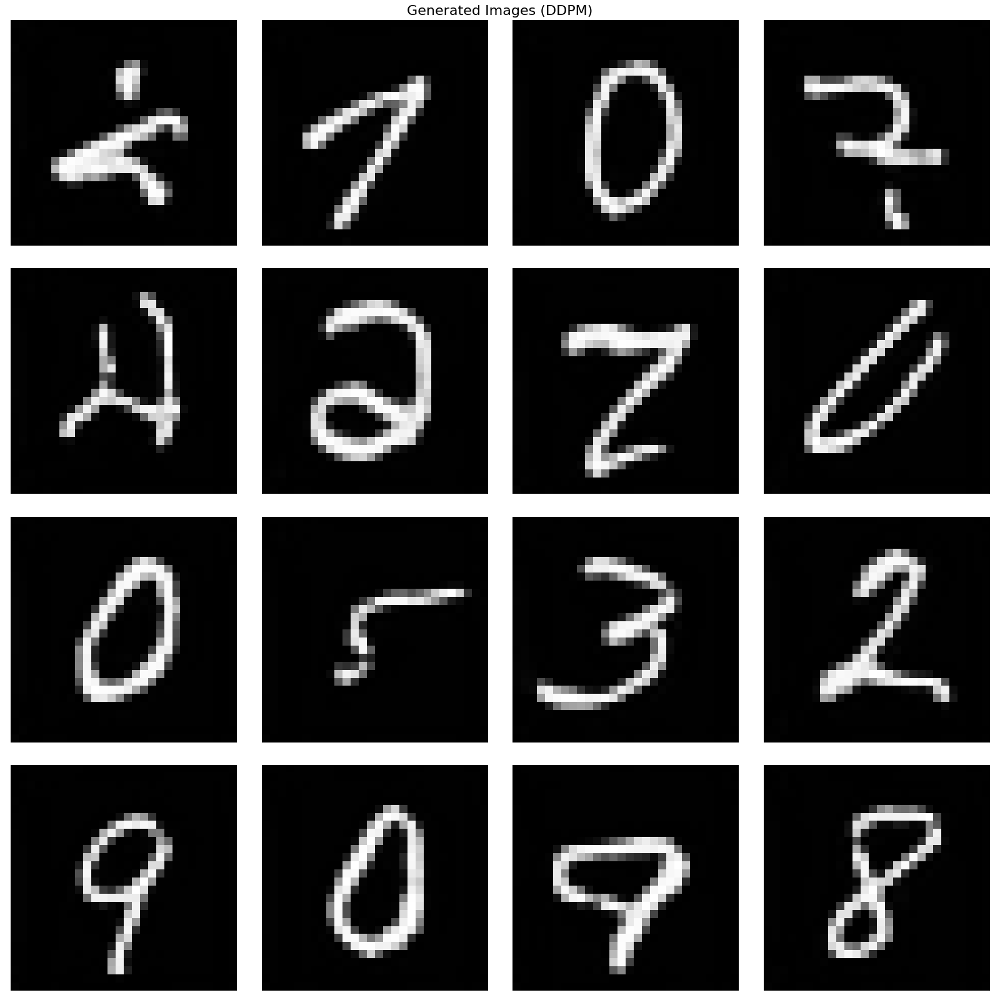
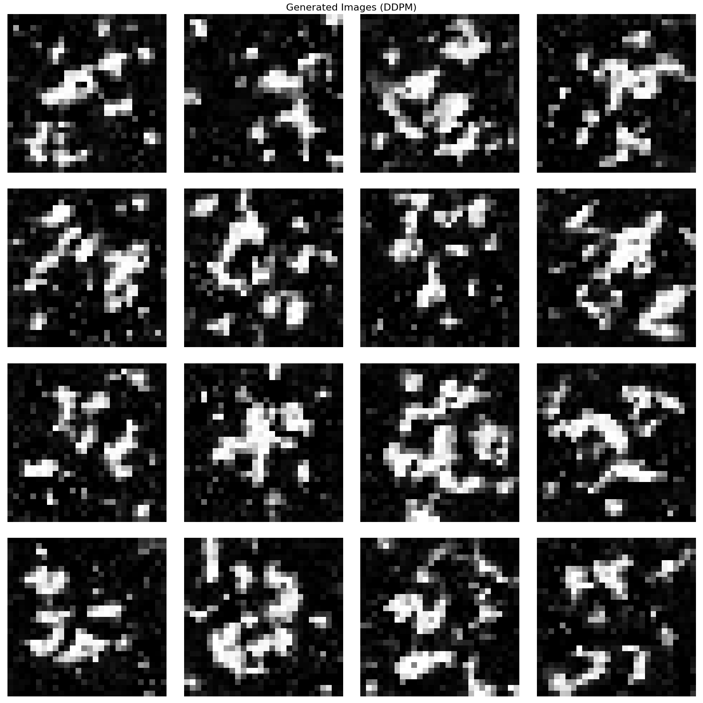

在理论篇中，我们介绍了DDPM的三种不同形式:预测原始数据、预测噪声和基于分数的解释。本篇将从代码实现的角度，详细对比这三种实现方式的差异和共同点。
根据理论篇（DM系列篇-02），扩散模型可以通过三种不同的参数化方式来实现:
x0):模型直接预测原始图像 \(x_0\)eps):模型预测添加的噪声 \(\epsilon\)score):模型预测得分（score function）\(\nabla_{x_t} \log p(x_t|x_0)\)虽然这三种方式的目标不同，但它们都是等价的，可以互相转换。在代码实现中，我们通过统一的框架支持这三种方式。
Diffuser 类通过 pred_objective 参数来支持三种不同的预测目标:
class Diffuser:
"""扩散过程管理器，支持三种预测目标:eps（噪声）、x0（原始数据）、score（得分）"""
def __init__(self, num_timesteps=1000, beta_start=0.0001, beta_end=0.02,
device='cpu', pred_objective='eps'):
self.num_timesteps = num_timesteps
self.device = device
self.pred_objective = pred_objective
assert pred_objective in ['eps', 'x0', 'score'], (
f"pred_objective must be 'eps', 'x0', or 'score', got {pred_objective}"
)
self.betas = torch.linspace(beta_start, beta_end, num_timesteps, device=device)
self.alphas = 1 - self.betas
self.alpha_bars = torch.cumprod(self.alphas, dim=0)关键设计点: - 统一的初始化接口，通过 pred_objective 参数区分不同的预测目标 - 三种预测目标共用相同的扩散过程参数（betas、alphas、alpha_bars） - 前向扩散过程 diffusion() 对三种方式完全一致
_model_predictions() 方法负责将不同预测目标的模型输出转换为统一的表示（预测的噪声 \(\hat{\epsilon}\) 和原始图像 \(\hat{x}_0\)）:
def _model_predictions(self, model, x, t, clip_x_start=False):
"""根据不同的预测目标，从模型输出得到预测的噪声和原始图像"""
model_output = model(x, t)
t_idx = t - 1
alpha_bar = self.alpha_bars[t_idx].view(-1, 1, 1, 1)
sqrt_alpha_bar = torch.sqrt(alpha_bar)
sqrt_one_minus_alpha_bar = torch.sqrt(1 - alpha_bar)
if self.pred_objective == 'eps':
# 预测噪声
eps = model_output
# 从噪声恢复 x0: x0 = (x_t - sqrt(1-alpha_bar) * eps) / sqrt(alpha_bar)
pred_x0 = (x - sqrt_one_minus_alpha_bar * eps) / sqrt_alpha_bar
elif self.pred_objective == 'x0':
# 直接预测原始数据
pred_x0 = model_output
# 从 x0 计算噪声: eps = (x_t - sqrt(alpha_bar) * x0) / sqrt(1-alpha_bar)
eps = (x - sqrt_alpha_bar * pred_x0) / sqrt_one_minus_alpha_bar
elif self.pred_objective == 'score':
# 预测得分（score = -eps / sqrt(1-alpha_bar)）
score = model_output
# 从 score 计算噪声: eps = -score * sqrt(1-alpha_bar)
eps = -score * sqrt_one_minus_alpha_bar
# 从噪声恢复 x0
pred_x0 = (x - sqrt_one_minus_alpha_bar * eps) / sqrt_alpha_bar
return eps, pred_x0转换关系:
eps):
x0):
score):
无论采用哪种预测目标，最终都能得到预测的噪声 \(\hat{\epsilon}\) 和原始图像 \(\hat{x}_0\)，从而统一进行去噪过程。
根据公式11，优化目标为:
\[\text{LOSS} = \|\hat{\epsilon}_\theta(x_t, t) - \epsilon\|_2^2\]
训练损失计算:
if pred_objective == 'eps':
target = noise # 真实噪声
loss = F.mse_loss(model_output, target)模型输出: - 直接输出预测的噪声 \(\hat{\epsilon}_\theta(x_t, t)\) - 形状:\((N, C, H, W)\)，与输入图像相同
优点: - 训练最稳定，噪声预测是最常用的方法 - 损失函数简单直观 - 与理论推导完全一致
缺点: - 需要从噪声推导 \(x_0\)，增加了一步计算
# 前向扩散
x_t, noise = diffuser.diffusion(x_0, t)
# 模型预测噪声
noise_pred = model(x_t, t)
# MSE损失
loss = F.mse_loss(noise_pred, noise)根据公式5，优化目标为:
\[D_{KL}(q(x_{t-1}|x_t, x_0) \| p_\theta(x_{t-1}|x_t)) = \frac{1}{2\sigma_q^2(t)} \cdot \frac{\bar{\alpha}_{t-1}(1 - \alpha_t)^2}{(1 - \bar{\alpha}_t)^2} \|\hat{x}_\theta(x_t, t) - x_0\|_2^2\]
在实际实现中，简化为:
\[\text{LOSS} = \|\hat{x}_\theta(x_t, t) - x_0\|_2^2\]
训练损失计算:
if pred_objective == 'x0':
target = x # 原始图像 x_0
loss = F.mse_loss(model_output, target)模型输出: - 直接输出预测的原始图像 \(\hat{x}_\theta(x_t, t)\) - 形状:\((N, C, H, W)\)，与输入图像相同
优点: - 模型输出直观，直接预测原始图像 - 在某些应用中可能更容易理解和调试
缺点: - 训练可能不如预测噪声稳定 - 需要从 \(x_0\) 推导噪声，再进行去噪
# 前向扩散
x_t, noise = diffuser.diffusion(x_0, t)
# 模型预测原始图像
x0_pred = model(x_t, t)
# MSE损失（直接与原始图像比较）
loss = F.mse_loss(x0_pred, x_0)根据公式19和公式20，得分函数与噪声的关系为:
\[\nabla_{x_t} \log p(x_t|x_0) = -\frac{\epsilon}{\sqrt{1 - \bar{\alpha}_t}}\]
优化目标为:
\[D_{KL}(q(x_{t-1}|x_t, x_0) \| p_\theta(x_{t-1}|x_t)) = \frac{1}{2\sigma_q^2(t)} \cdot \frac{(1 - \alpha_t)^2}{\alpha_t} \|s_\theta(x_t, t) - \nabla_{x_t} \log p(x_t|x_0)\|_2^2\]
其中 \(s_\theta(x_t, t)\) 是模型预测的得分函数。
训练损失计算:
if pred_objective == 'score':
# score = -eps / sqrt(1 - alpha_bar)
t_idx = t - 1
alpha_bar = diffuser.alpha_bars[t_idx].view(len(t), 1, 1, 1)
target = -noise / torch.sqrt(1 - alpha_bar)
loss = F.mse_loss(model_output, target)模型输出: - 直接输出预测的得分函数 \(s_\theta(x_t, t) = \nabla_{x_t} \log p(x_t|x_0)\) - 形状:\((N, C, H, W)\)，与输入图像相同
优点: - 连接了扩散模型和基于分数的生成模型 - 得分函数在概率流（probability flow）方法中有重要作用 - 与 Tweedie 公式直接对应
缺点: - 需要计算额外的系数 \(\sqrt{1 - \bar{\alpha}_t}\) - 损失函数可能不如直接预测噪声稳定
# 前向扩散
x_t, noise = diffuser.diffusion(x_0, t)
# 计算真实的得分函数
t_idx = t - 1
alpha_bar = diffuser.alpha_bars[t_idx].view(len(t), 1, 1, 1)
score_true = -noise / torch.sqrt(1 - alpha_bar)
# 模型预测得分
score_pred = model(x_t, t)
# MSE损失
loss = F.mse_loss(score_pred, score_true)虽然三种方式的模型输出不同，但它们是完全等价的，可以通过数学变换互相转换。在去噪过程中，三种方式最终都使用相同的公式:
\[x_{t-1} = \frac{1}{\sqrt{\alpha_t}} \left(x_t - \frac{1 - \alpha_t}{\sqrt{1 - \bar{\alpha}_t}} \hat{\epsilon}_\theta(x_t, t)\right) + \sigma_t \epsilon\]
其中 \(\hat{\epsilon}_\theta(x_t, t)\) 通过 _model_predictions() 方法从不同的模型输出中统一获得。
def denoise(self, model, x, t):
"""反向去噪过程:从噪声中恢复图像（支持三种预测目标）"""
t_idx = t - 1
alpha = self.alphas[t_idx].view(-1, 1, 1, 1)
alpha_bar = self.alpha_bars[t_idx].view(-1, 1, 1, 1)
alpha_bar_prev = self.alpha_bars[t_idx-1].view(-1, 1, 1, 1)
# 统一处理:无论哪种预测目标，都转换为 eps 和 pred_x0
model.eval()
with torch.no_grad():
eps, pred_x0 = self._model_predictions(model, x, t, clip_x_start=True)
model.train()
# 使用统一的去噪公式
mu = (x - ((1-alpha) / torch.sqrt(1-alpha_bar)) * eps) / torch.sqrt(alpha)
std = torch.sqrt((1-alpha) * (1-alpha_bar_prev) / (1-alpha_bar))
noise = torch.randn_like(x, device=self.device)
noise[t == 1] = 0 # no noise at t=1
return mu + noise * std关键点: - 去噪过程对三种方式完全一致 - 通过 _model_predictions() 统一转换不同预测目标的输出 - 最终都使用相同的均值 \(\mu\) 和方差 \(\sigma_t\) 进行采样
下面展示了三种实现方式在相同数据集（MNIST）和相同训练配置下的生成效果:

图1 预测噪声 (eps) 的生成效果
预测噪声方式生成的图像质量最高，数字清晰、边缘锐利，整体效果最佳。

图2 预测原始数据 (x0) 的生成效果
预测原始数据方式生成的图像质量良好，但在某些细节上可能略逊于预测噪声方式。

图3 预测得分函数 (score) 的生成效果
预测得分函数方式生成的图像质量明显较差，数字模糊、不清晰，可以发现预测得分函数的效果并不是很好。
| 实现方式 | 生成质量 | 训练稳定性 | 数值稳定性 | 推荐度 |
|---|---|---|---|---|
| 预测噪声 (eps) | ⭐⭐⭐⭐⭐ | ⭐⭐⭐⭐⭐ | ⭐⭐⭐⭐⭐ | ⭐⭐⭐⭐⭐ |
| 预测原始数据 (x0) | ⭐⭐⭐⭐ | ⭐⭐⭐⭐ | ⭐⭐⭐⭐ | ⭐⭐⭐⭐ |
| 预测得分 (score) | ⭐⭐ | ⭐⭐⭐ | ⭐⭐ | ⭐⭐ |
从实际效果对比可以看出，预测噪声方式不仅训练最稳定，生成的图像质量也最好，这进一步验证了在实践中应该优先选择预测噪声的方式。
code/dl/dm/ddpm3/
├── unet.py # U-Net网络定义（三种方式共用）
├── ddpm.py # 扩散过程管理器（支持三种预测目标）
├── train_infer.py # 训练和推理主程序
├── config.yaml # 配置文件（通过pred_objective参数选择预测目标）
├── ddpm_eps_model.pth # 预测噪声方式的模型权重
├── ddpm_x0_model.pth # 预测原始数据方式的模型权重
└── ddpm_score_model.pth # 预测得分函数方式的模型权重关键文件说明:
ddpm.py:核心扩散过程管理器
pred_objective 参数支持三种预测目标_model_predictions() 方法统一处理不同预测目标的转换denoise() 方法对三种方式使用相同的去噪公式config.yaml:配置文件
pred_objective 参数可选择 'eps'、'x0' 或 'score'pred_objective 自动生成对应的模型文件名ddpm_eps_model.pth:预测噪声方式ddpm_x0_model.pth:预测原始数据方式ddpm_score_model.pth:预测得分函数方式